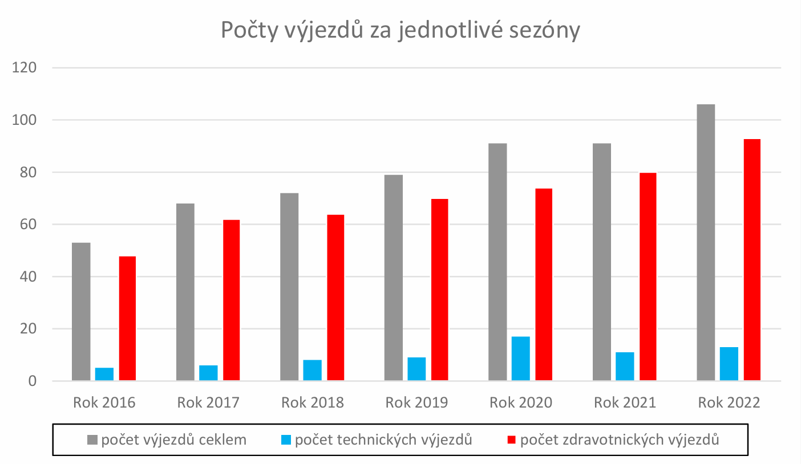

Letní sezóna na Slapské přehradě
Letní sezóna na Slapské přehradě začíná v polovině června a trvá až do konce srpna. Základna VZS se nachází na území Staré Živohošti (Živohošť 104, 262 03 Chotilsko, 102. říční kilometr). Území pro zásah VZS Praha 6 je od slapské přehrady (151. říční kilometr) až po Cholínský most (115. říční kilometr), pro tyto zásahy VZS využívá lodě a vodní skútry. Pro zásah na pevnině je využíváno záchranné vozidlo, veškerá plavidla a vozidla jsou vybaveny výstražným světelným zařízením modré barvy a výstražným zvukovým zařízením, tuto techniku smí ovládat pouze speciálně vyškolena osoba.
Posádka je většinou pětičlenná, minimálně však tříčlenná a slouží v režimu 24/7 v podobu jednoho týdne. Posádka se skládá z velitele, ze zdravotnického záchranáře, řidiče (pilota) a dalších vodních záchranářů. Naplň jejich práce je poskytovaní první pomoci a resuscitace. Pro resuscitaci jsou všichni členové posádky vyškoleni k použití AED (automaticky externí defibrilátor). Součástí jejich náplně je poskytovaní technické pomoci na vodní ploše.
Služba posádce začíná každý den v 08:00 ráno telefonickým spojením s KOPIS (Krajské operační a informační středisko) a s ZZS středočeského kraje. Hlášení obsahuje informace o poctu záchranářů a stavu techniky pro denní součinnost. V průběhu dne posádka vyjíždí ke všem zásahům jako složka IZS, během dne posádka trénuje a procvičuje svoje znalosti, opravuje techniku a tráví své osobní volno na základně. V případě tísňového volaní musí být posádka schopna vyrazit do 2 minut, v nočních hodinách od 20:00 do 8:00 musí být posádka schopna vyrazit do 5 minut od nahlášení.
